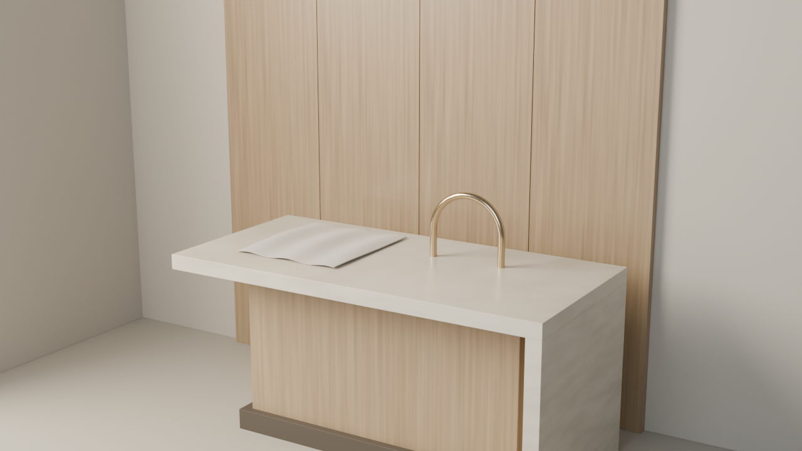

3D / Interior studies
Open the skill ↗Blender · Cycles · Reference-led
Warm materials.
Believable rooms.
A complete method for coastal interiors: practical plans, crafted furniture, tactile fabrics and light that gives them form.
This original material vignette tests the portable workflow. It is a small procedural study, not a finished apartment or a benchmark-quality claim.

Compare broad stone highlights, directional timber grain and the metal's bright/dark reflection bands. The authored swatch is not a cloth-simulation result.